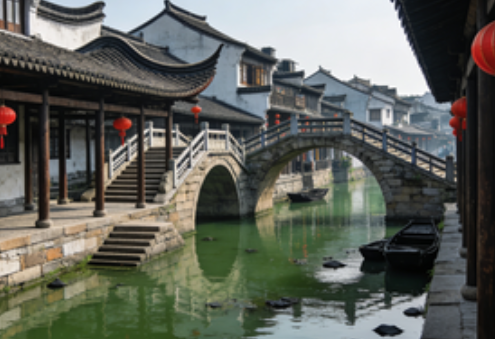
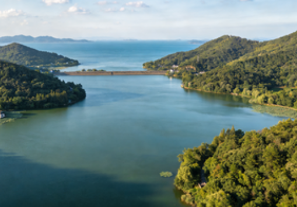

Tourist Attractions of Jiaxing

Nanhu Scenic Area
Nanhu Scenic Area is a national 5A-level tourist attraction. Its core sights include the Red Boat, Misty Rain Tower, and the Nanhu Revolutionary Memorial Hall. The Red Boat is the site where the First National Congress of the Communist Party of China concluded, making it an important landmark in China's red tourism. Misty Rain Tower, originally built during the Five Dynasties period, was named after the Tang Dynasty poet Du Mu's famous line, and from its summit visitors can enjoy a panoramic view of the entire lake.
Nanhu Scenic Area is not only a red tourism destination but also a scenic Jiangnan water town with beautiful natural landscapes. Visitors can take a boat cruise on the lake, appreciating the picturesque scenery and experiencing the perfect fusion of revolutionary culture and water town charm.

Wuzhen Scenic Area
Wuzhen is a national 5A-level tourist attraction divided into East Gate (Dongzha) and West Gate (Xizha) scenic areas. East Gate focuses on water town scenery and cultural landscapes, preserving numerous Ming and Qing dynasty buildings that showcase the original appearance of Jiangnan water towns. West Gate, developed with appropriate modernization on the foundation of preservation, is particularly enchanting at night when riverside lanterns reflect on the water in a breathtaking display.
Wuzhen is not only a tourist destination but also the permanent venue for the World Internet Conference. Each year, it attracts numerous domestic and international guests, serving as an important platform connecting China with the world.

Xitang Ancient Town
Xitang Ancient Town is a national 5A-level tourist attraction known as a "Living Millennium Town." The entire town preserves a complete collection of Ming and Qing dynasty architecture, with 122 alleyways crisscrossing the streets and 24 stone bridges connecting both banks. Covered corridors stretch for miles, creating a distinctive water town landscape.
Xitang's night scenery is uniquely captivating: red lanterns along the river light up one after another, their reflections shimmering on the water to create a warm and romantic atmosphere. Additionally, Xitang retains numerous folk activities and specialty snacks, making it an ideal destination for experiencing the Jiangnan water town way of life.

Nanbeihu Lake Scenic Area
Nanbeihu Lake is located in Haiyan County, Jiaxing, and is a national 4A-level tourist attraction. It is the only scenic area in China that integrates mountains, sea, and lake into one landscape. Surrounded by mountains on three sides and facing the sea on the fourth, the lake is divided into a south lake and a north lake connected by a long causeway, forming a unique natural landscape.
Beyond its beautiful natural scenery, Nanbeihu Lake features numerous cultural attractions such as the Kim Koo Refuge and the Chen Congzhou Art Gallery, making it a comprehensive tourist destination that combines natural beauty, cultural history, and leisure vacationing.
Travel Guide for Jiaxing
Jiaxing offers abundant tourism resources with different attractions suited to various travel styles. Below are recommended travel routes and tips:
| Duration | Recommended Route | Highlights | Tips |
|---|---|---|---|
| 1 Day | Nanhu Scenic Area + Yuehe Historic Street | Red culture, water town charm, specialty snacks | Book Nanhu boat tickets in advance; avoid holiday peaks |
| 2 Days | Day 1: Nanhu + City Center; Day 2: Wuzhen | Red tourism, ancient town atmosphere, night views | Enter Wuzhen Xizha in the afternoon and stay until evening |
| 3 Days | Day 1: Nanhu; Day 2: Xitang; Day 3: Nanbeihu Lake | Multi-dimensional water town experience, mountain-sea-lake panorama | Nanbeihu Lake is large; consider taking the sightseeing vehicle |
Jiaxing enjoys a mild climate suitable for year-round travel. Spring (March to May) offers blooming rapeseed flowers and peach blossoms; summer (June to August) provides a refreshing water town escape; autumn (September to November) brings pleasant temperatures; and winter (December to February) reveals the tranquil beauty of ancient towns. Visitors can reach Jiaxing by high-speed rail or car, with convenient intra-city transportation and shuttle buses between attractions.